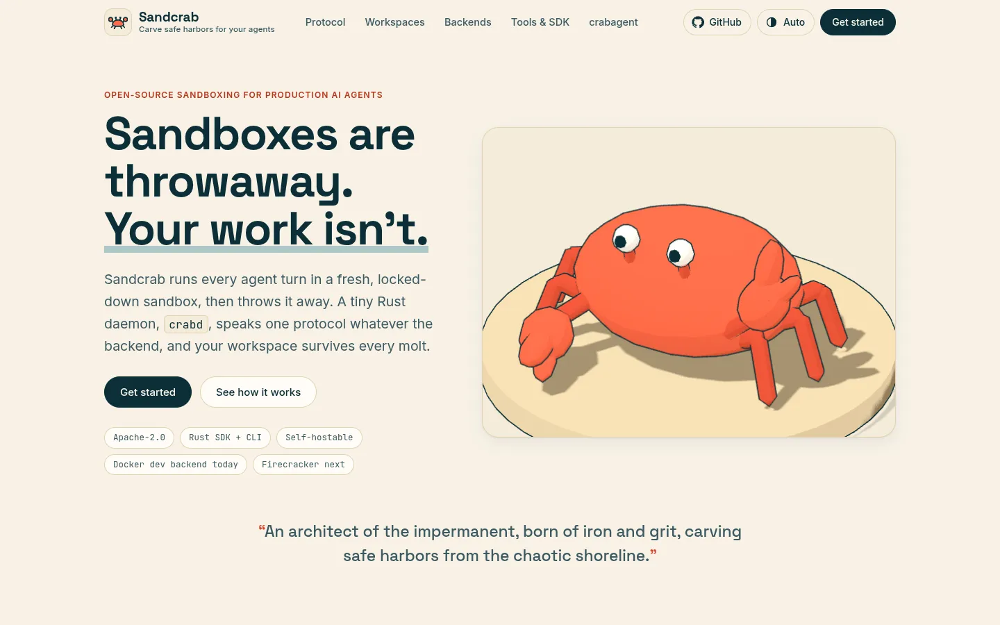

Sandcrab, explained
Ephemeral sandboxes with persistent workspaces for AI agents. These pages explain the V1 code, its results and its visual language.
file://. From the repo root:
python3 -m http.server -d docs/site 8000http://127.0.0.1:8000/.

Repo walkthrough
Crate map, the request path from host to crabd, workspace lifecycle, security gates, with links into the code.

How Sandcrab works
Interactive three.js presentation: sandbox lifecycle, protocol path, workspace mounts, Docker vs. Firecracker isolation, benchmark results.

Benchmark report
DockerDev measured on the V1 host: spawn, first call, teardown, resources, density. Firecracker columns are pending a KVM host.

Crab symbology
One illustrated scene and glyph per concept: molt, shell, burrow, claws, tide clock, one wire, jar vs. tide pool.

Landing page
The page crabagent wrote inside a Sandcrab sandbox during the V1 live check, copied unchanged.

3D kit
The reusable three.js crab scenes (vendored, no CDN) used by the presentation and the landing page. Add ?tune for the tuning panel.
Reference docs
- README: status, quickstart, SDK example
- Protocol and tool reference
- CLI reference
- crabagent guide
- Dev host and KVM host setup
- Roadmap and V1 status
- Live check report